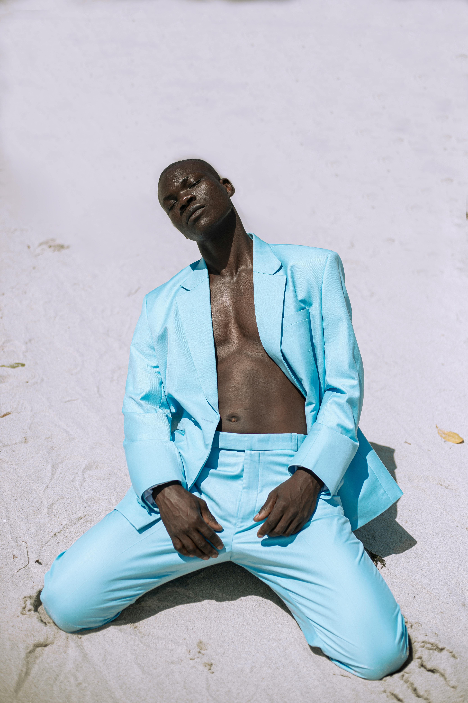

The Walk
The walk from Monterosso to Riomaggiore will take you approximately two hours, give or take an hour depending on the weather conditions and your physical shape.
The walk from Monterosso to Riomaggiore will take you approximately two hours, give or take an hour depending on the weather conditions and your physical shape.
Cinque Terre comprises five villages: Monterosso, Vernazza, Corniglia, Manarola, and Riomaggiore.
On the northwest cost of the Italian Riviera, north of the city La Spezia.
The Walk is free!
This example does not really do anything, other than showing you how to add the viewport meta element.
Responsive images are images that scale nicely to fit any browser size.
using the width property below;
If the CSS width proprtyu is set to 100%, the image will be responsive and scale up and down.
When the CSS width proprty is et ina percentage value, the image will scale up and down when resizing the browser window. Resize the browser window to see the effect.
"max-width:100%" prevents the image from getting bigger than its original size. However, if you make the browser window smaller, the image will still scale down.
Resize the browser window to see the effect.
Resize the browser window to see how the text size scales.
Use the "vw" unit when sizing the text. 10vw will set the size to 10% of the viewport width.
Viewport is the browser window size. 1vw = 1% of viewport width. If the viewport is 50cm wide, 1vw is 0.5cm.
Resize the browser window.
Make sure you reach the breakpoint at 800px when rsizing this frame.
Left Menu
Main Content
Right Content